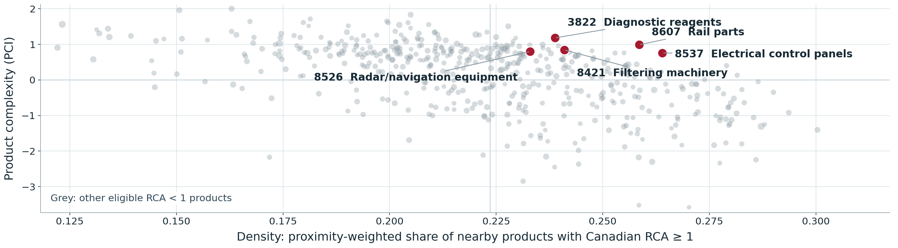

ECON 342 · Week 3
What could Canada export next?
Week 2 described where Canada is relatively specialized. The product space asks which not-yet-specialized products are close to that observed export basket.
Bridge: export shares → RCA
Network: co-export proximity
Screen: Canada-specific density
Discipline: candidate, not forecast
Use ← →, swipe, or the controls below.
Start with an export-basket comparison
Swipe the chart left to see every bar and value →
A ratio above one describes greater prominence in Canada's basket. It does not prove a productivity cause or compare total export dollars.
Bridge Replace the U.S. benchmark with the world, and the same share-over-share logic becomes RCA.
Source: Author's calculation from the UN Comtrade public API, HS 2022 two-digit merchandise exports, 2023.
RCA compares a country's product share with the world share
Calculated RCA
Filtering machinery occupies a smaller share of Canada's exports than of world exports.
RCA < 1 does not mean zero exports. Canada exported about US$1.64B of this product in 2024.
Source: Course reconstruction from Harvard Growth Lab Atlas data, HS92 four-digit goods, 2024. Values shown are for HS4 8421.
RCA is a snapshot; the product space adds possible routes
Observed basket
Which exports are unusually prominent?
Set Mc,p = 1 when country c has RCAc,p ≥ 1.
Relatedness
Which products tend to appear together?
Use many countries' co-export patterns to infer product-product proximity.
Candidate screen
Which absent specializations are nearby?
Combine the global network with Canada's current RCA ≥ 1 basket.
Related products may draw on overlapping know-how, suppliers, institutions, or infrastructure. The network infers these capabilities; it does not observe them directly.
Method: Hidalgo, Klinger, Barabási, and Hausmann, Science 317 (2007).
The product space turns products into a network
- Node: one product.
- Thicker link: stronger global co-export proximity.
- Crimson: product in Canada's revealed-specialization basket.
- Gold: nearby candidate for investigation.
A link is not an input-output flow. It summarizes how often products appear together across countries.
Stylized teaching diagram. The empirical network is inferred from many countries and products.
Proximity is the smaller conditional co-export probability
Worldwide product-pair object
min{6 ÷ 8 = 0.75, 6 ÷ 10 = 0.60} = 0.60
The minimum makes the link symmetric and prevents a rare product nested inside a common one from looking artificially close.
Classic binary co-export definition from Hidalgo et al. (2007). Numbers are illustrative.
Density fixes Canada and one candidate, then scans its neighbours
| Neighbour of coated board | Proximity | Canada has RCA ≥ 1? |
|---|---|---|
| Wood pulp | 0.50 | |
| Paper | 0.30 | |
| Printing machinery | 0.20 |
Coated-board density
(0.50 + 0.30) ÷ 1.00 = 0.80
Toggle a neighbour. Density changes with Canada's basket; proximity between the products does not.
Illustrative values. Course convention sets the candidate's self-link to zero; distance = 1 − density.
A useful candidate is under-represented, nearby, and worth investigating
1 · Under-represented
Canadian RCA < 1
The product is not currently in Canada's binary revealed-specialization basket. It can still have substantial exports.
2 · Nearby
Higher density
A larger share of the product's global proximity weight connects to products already in Canada's basket.
3 · Investigate
Add other evidence
Complexity, market scale, firms, costs, demand, skills, regulations, emissions, and public objectives still matter.
Language discipline: say “candidate” or “nearby opportunity.” Do not say forecast, proof of comparative advantage, or subsidy recommendation.
Think A product can be very nearby but low-complexity. Another can be ambitious but far from Canada's observed basket. Which objective matters?
Canada's candidates trade off proximity and product complexity

Among the five highlighted discussion cases, electrical control panels have the highest density at 26.4 percent; rail parts follow at 25.9 percent; filtering machinery at 24.1 percent; diagnostic reagents at 23.9 percent; and radar and navigation equipment at 23.3 percent. Diagnostic reagents have the highest product complexity at 1.18, followed by rail parts at 0.99. These are selected comparisons, not a ranking or forecast.
Tap Expand, then scroll the enlarged figure →
Source: Course reconstruction from Harvard Growth Lab Atlas GraphQL data, 2024 HS92 four-digit goods; retrieved September 28, 2026. Filter: Canadian RCA < 1, Canadian exports ≥ US$10M, world exports ≥ US$1B.
Five cases show why one metric cannot choose for us
Swipe the chart left to inspect every case →
Canada already exported US$2.22B of electrical control panels in 2024.
Source: Course reconstruction from Harvard Growth Lab Atlas GraphQL data, 2024. Five cases were selected for discussion; they are not recommendations.
Read a candidate row as evidence—not as a verdict
Supported
- Canada already exports this product.
- Its Canadian export share is below its world benchmark share.
- Its network neighbourhood is relatively present in Canada's basket.
Not established
- future demand or profitability
- domestic value added or worker gains
- the best policy instrument
Source: Harvard Growth Lab Atlas-based course reconstruction, HS4 8421, 2024.
The 2026 Atlas update preserves gradations around RCA = 1
Classic binary presence
Continuous weight
The binary rule jumps at one. The continuous transform changes smoothly and keeps more information about how far RCA lies from the cutoff.
The public lab uses the original binary co-export method because students can calculate and audit every step. Do not claim that its ranking exactly reproduces the current Atlas.
Source: Harvard Growth Lab Atlas glossary, accessed September 28, 2026. The Atlas's 2026 continuous update applies to complexity calculations; its glossary continues to describe proximity with the classic binary co-export rule.
Before recommending a product, try to disprove the screen
Commercial feasibility
- market size and expected demand
- Canadian costs, scale, firms, and workers
- suppliers, certification, logistics, and tariffs
Public decision
- a specific market failure or coordination problem
- effects across workers, regions, and communities
- public cost, exit rules, resilience, and emissions
Geographic warning: national trade data can join capabilities located in different provinces. A supplier in Ontario may not make entry easy for a firm in British Columbia.
Challenge Pick one case. Name the single missing fact that could most quickly overturn your enthusiasm.
A relatedness map does not choose an objective for us
Map
What is near?
Density and complexity describe a landscape.
Objective
What should improve?
Exports, wages, resilience, emissions, or regional inclusion?
Constraints
What is feasible?
Budget, skills, risk, time, and institutional capacity.
Different defensible objectives can produce different rankings from the same product-space evidence.
Conceptual extension based on Stojkoski and Hidalgo, “Optimizing Economic Complexity,” Research Policy 55 (2026), 105454.
The lab turns the method into an auditable workflow
Fixed classroom input
Cached data mean no account, API key, or live download is needed.
Pair finish line
canada_candidates.csvcanada_candidates.pngcandidate_memo.md
The memo names two candidates, explains why each is nearby, and identifies missing evidence.
Data: Harvard Growth Lab Atlas GraphQL API, 2024 HS92 four-digit goods. The repository includes provenance and SHA-256 checksums.
Codex can write code; the pair remains responsible for the economics
Checkpoint 1
Inspect before editing
Verify year, classification, units, source, dimensions, missing values, negatives, and duplicates.
Checkpoint 2
Verify one RCA by hand
Record Canadian product and total exports plus world product and total exports.
Checkpoint 3
Build and test
Check that proximity is symmetric and bounded, density is bounded, and every candidate has RCA below one.
Checkpoint 4
Interpret and challenge
Choose two candidates, identify nearby Canadian strengths, and name evidence that could overturn each.
A rerun must reproduce the same result. “All tests passed” is not enough without the evidence for each check.
A successful run must be reproducible by another person
| Evidence | What the pair records |
|---|---|
| Inputs | year, classification, units, source, row count |
| Definitions | RCA cutoff, proximity rule, zero-self-link density rule |
| Validation | passed checks and one hand calculation |
| Reproduction | exact command and output paths |
| Interpretation | two candidates plus missing evidence |
Driver
Operates Codex and the terminal, states the intended output, and reports changed files and commands.
Auditor
Checks scope, units, definitions, one RCA, all validations, and every number in the memo.
Finish “Product-space density is useful because ______, but it cannot tell us ______.”
Try first—then reveal the answer
1. If Canada's product share is 0.306% and the world share is 0.419%, what are RCA and binary presence?
RCA = 0.306 ÷ 0.419 ≈ 0.73. Because 0.73 is below one, binary M = 0. This does not mean zero Canadian exports.
2. Ten countries specialize in pulp, eight in paper, and six in both. What is proximity?
The conditionals are 6/8 = 0.75 and 6/10 = 0.60, so proximity is the smaller value: 0.60.
3. What does density measure—and what can it not establish?
Density is the proximity-weighted share of a candidate's neighbours already in Canada's revealed-specialization basket. It does not establish profitability, future demand, causal capabilities, comparative advantage, or a case for subsidy.
Ready when you can: distinguish RCA, proximity, and density; show each short calculation; and call the result a candidate rather than a prediction.